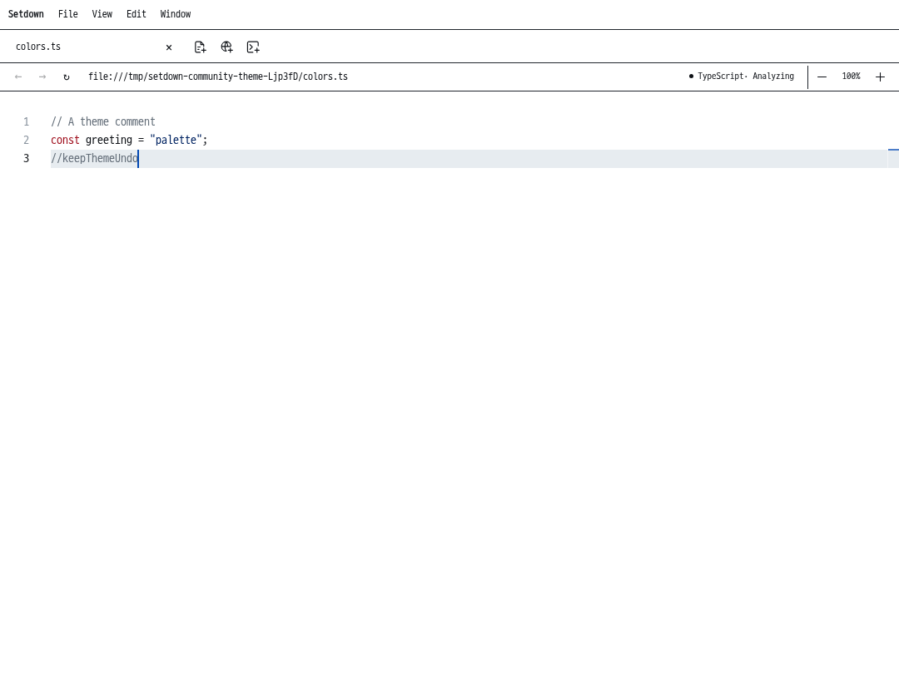
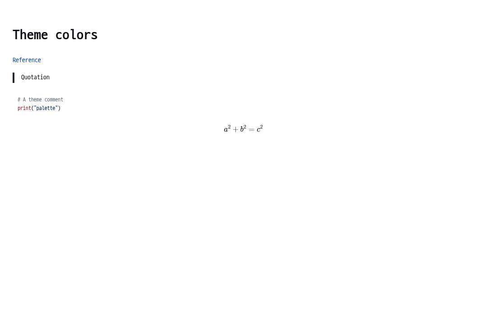
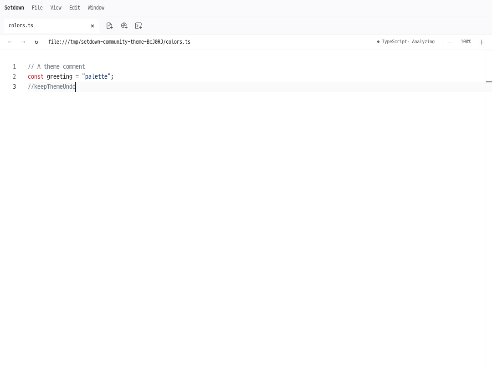
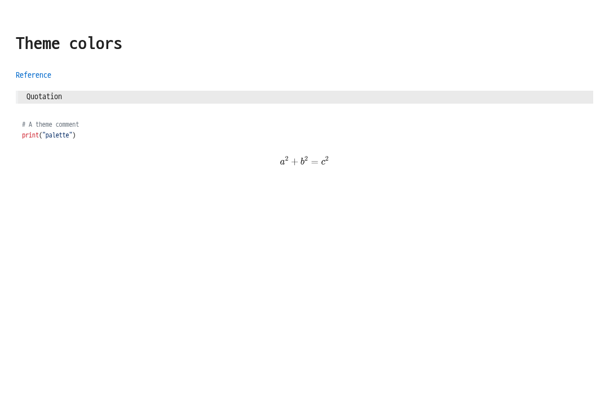
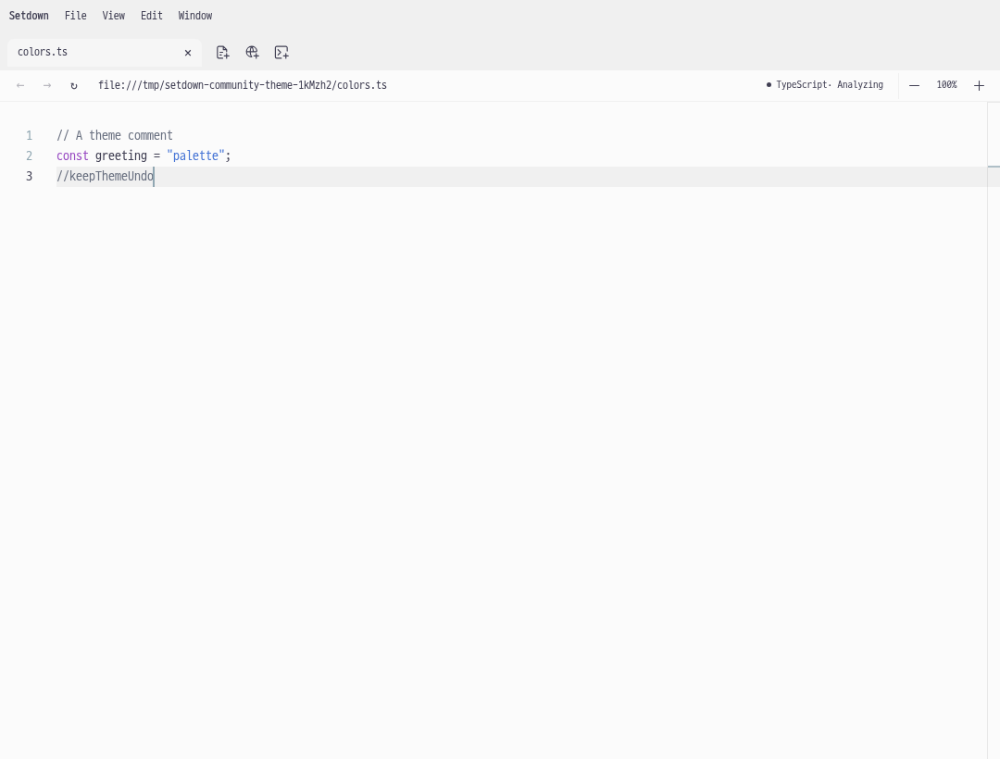
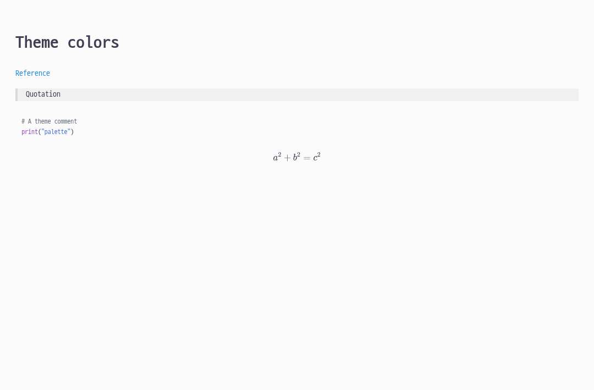
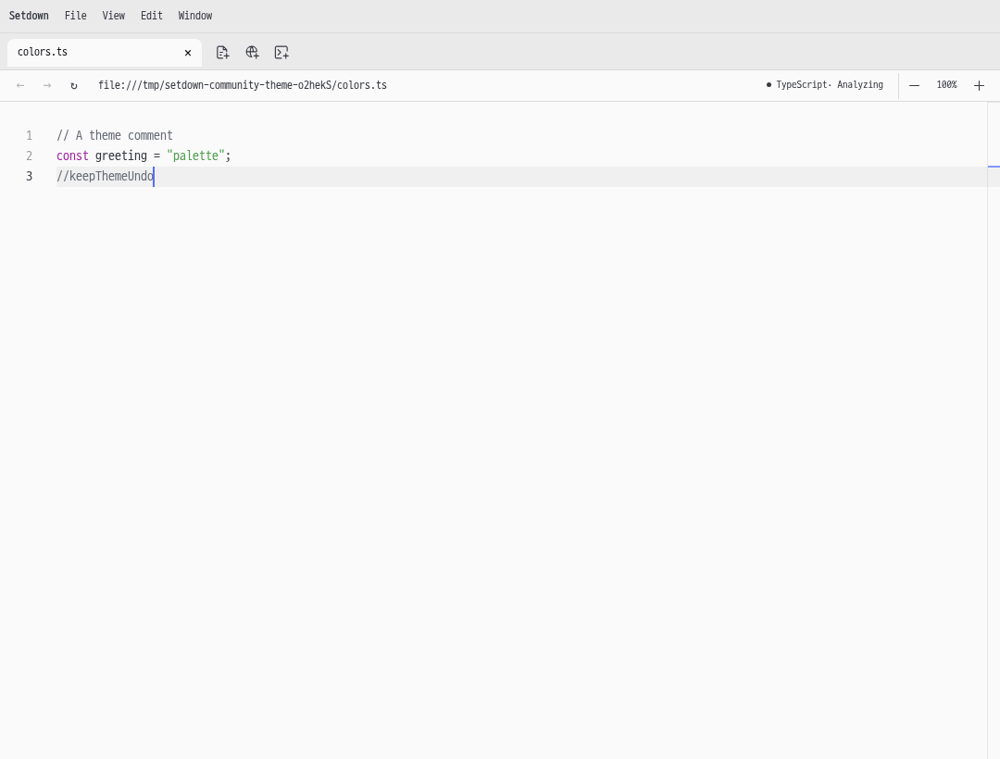
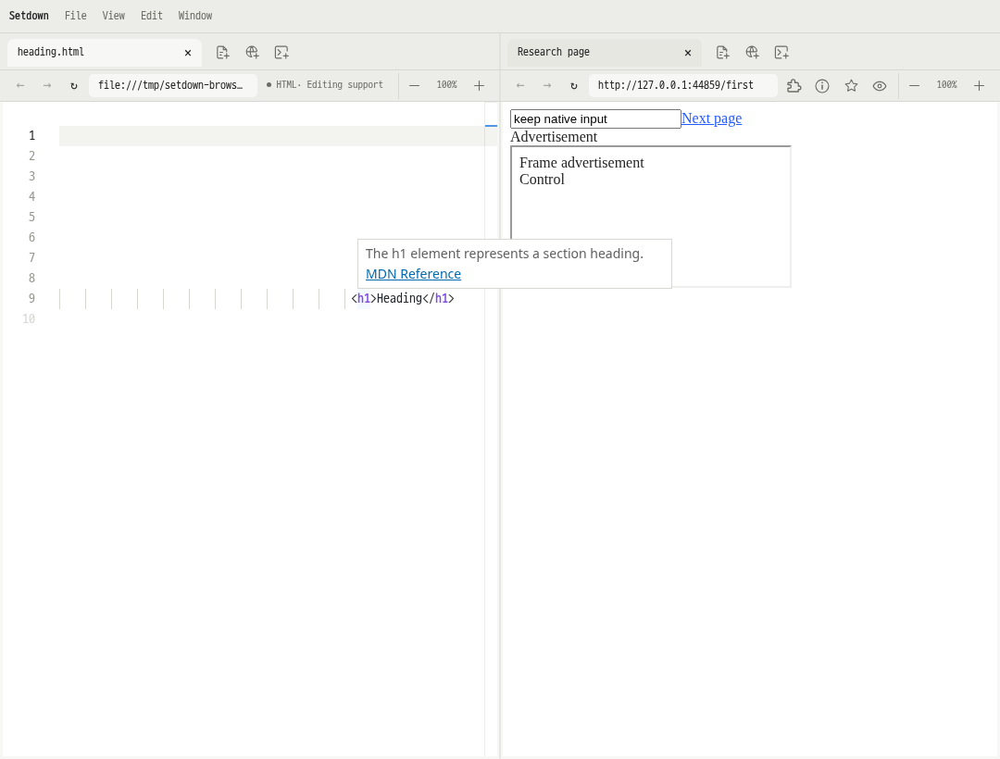

View → Theme에서 선택할 수 있습니다. 아래 이미지는 격리된 Xvfb에서 실행한 실제 Electron 화면입니다.
4개 테마의 색상, Undo, 포커스 보존, 숨겨진 미리보기, 재시작 후 설정 유지 검사가 통과했습니다. Light Owl·Atom One Light의 주석은 기존 4.5:1 대비 기준에 맞춰 진하게 보정했습니다.
테마별 검증 로그 · 단위 검사·빌드 로그 · 전체 Electron 검사 로그







우클릭 메뉴와 같은 표시 처리로, 툴팁이 원래 위치와 크기를 유지하면서 옆 웹 화면 위에 표시됩니다. 실제 OS 마우스로 겹친 영역과 MDN 링크를 클릭하고, 닫은 뒤 웹 페이지와 입력 내용이 보존되는 것을 검증했습니다.

단위 검사 740개, 도구 검사 14개, 실제 Electron 검사 263개가 통과했습니다. 타입 검사와 빌드도 통과했습니다.
성능 비교: 변경 전·후 각 5회 반복, 총 80회 앱 실행. 같은 Xvfb 디스플레이, 동일한 빌드 설정(소스맵 비활성화)으로 비교했으며 48개 항목 모두 기존 허용 기준을 통과했습니다. 허용 기준은 증가가 25%와 50ms를 모두 초과할 때 실패입니다.
아래 값은 변경 전 → 변경 후 중앙값(ms)입니다. 반복 전환은 각 실행의 3–5번째 전환 중앙값을 사용합니다.
| 화면 | 편집 | 준비 대기 | 첫 전환 | 두 번째 | 반복 전환 |
|---|---|---|---|---|---|
| Markdown | 없음 | 0ms | 33 → 31 | 29 → 25 | 25 → 21 |
| Markdown | 있음 | 0ms | 291 → 273 | 93 → 93 | 88 → 89 |
| Markdown | 없음 | 3000ms | 27 → 29 | 23 → 23 | 20 → 22 |
| Markdown | 있음 | 3000ms | 109 → 99 | 92 → 92 | 93 → 92 |
| Git 비교 | 없음 | 0ms | 904 → 952 | 17 → 21 | 29 → 28 |
| Git 비교 | 있음 | 0ms | 987 → 1008 | 1495 → 1483 | 172 → 177 |
| Git 비교 | 없음 | 3000ms | 27 → 28 | 21 → 21 | 17 → 17 |
| Git 비교 | 있음 | 3000ms | 229 → 229 | 182 → 182 | 174 → 175 |
| 화면 | 편집 | 준비 대기 | 첫 전환 | 두 번째 | 반복 전환 |
|---|---|---|---|---|---|
| Markdown | 없음 | 0ms | 20 → 24 | 36 → 35 | 12 → 11 |
| Markdown | 있음 | 0ms | 16 → 16 | 13 → 16 | 13 → 13 |
| Markdown | 없음 | 3000ms | 17 → 17 | 11 → 12 | 11 → 11 |
| Markdown | 있음 | 3000ms | 16 → 16 | 13 → 16 | 13 → 13 |
| Git 비교 | 없음 | 0ms | 25 → 23 | 13 → 12 | 13 → 12 |
| Git 비교 | 있음 | 0ms | 23 → 22 | 21 → 22 | 18 → 19 |
| Git 비교 | 없음 | 3000ms | 24 → 25 | 11 → 11 | 17 → 18 |
| Git 비교 | 있음 | 3000ms | 22 → 23 | 19 → 18 | 18 → 18 |
측정 원본·48개 비교 결과 · 16개 테마의 실제 주석 대비
초기 테마 전체 검사에서는 기존 TypeScript 확대 검사의 입력 문자열 확인 1건이 실패했습니다. 이후 툴팁을 포함한 전체 검사는 시스템 중단으로 92번째에서 종료됐습니다. 중단 후 같은 최종 빌드로 전체 Electron 검사 263개를 실행해 모두 통과했습니다. 자동 재시도, 검사 생략, 기준 완화는 적용하지 않았습니다. 이전 실행 로그도 보존했습니다.